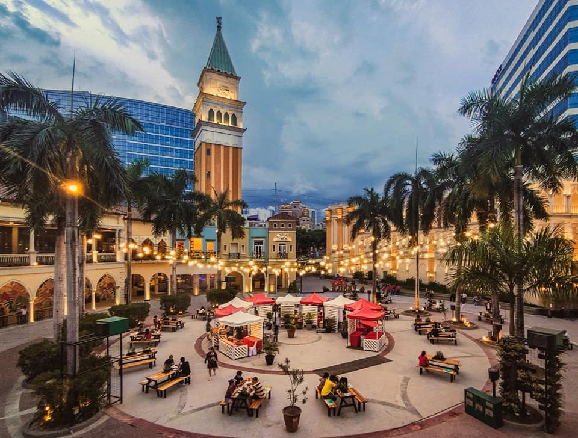
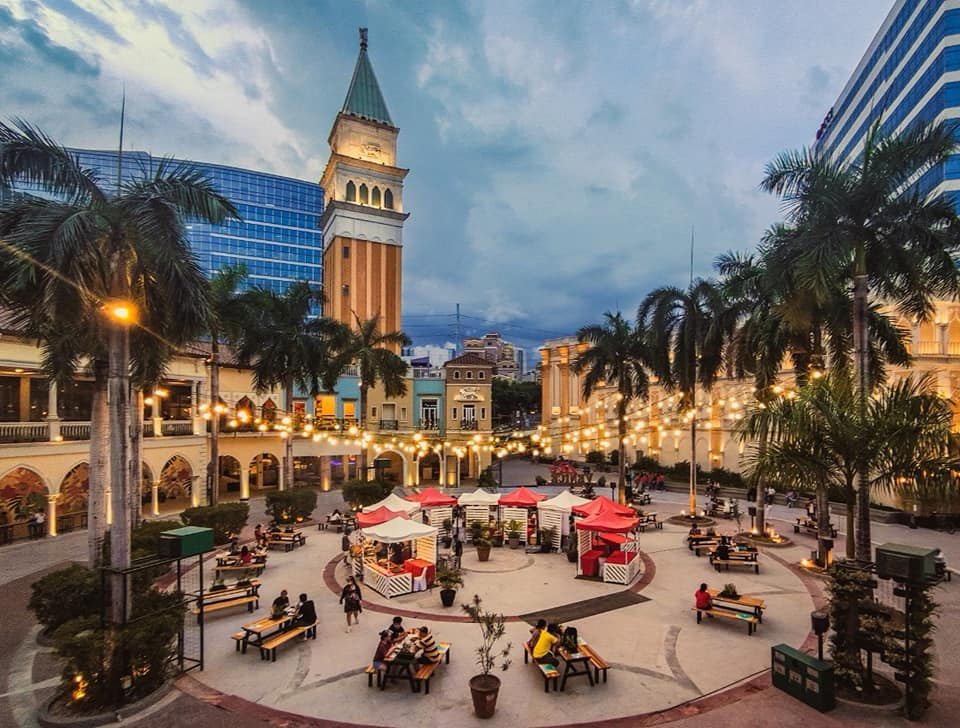

History
Venice Grand Canal Mall is an Italian-inspired mall located at Upper McKinley Road, McKinley Hill in Taguig City. It features a Grand Canal which has a size of 656 feet long and 49 feet wide along the three-story mall where tourists can fully experience a Venetian way of life. Also, visitors can experience a ride on the gondola. A gondola is a wooden boat that has a size of 36 feet and is hand-built using exceptional workshops. It is said to be that gondoliers maintain their own boats, and professions are frequently passed down from father to son for generations to come. The gondola can be found below the Rialto Bridge replica inside the mall.
According to its past history, BAUER Foundations Philippines, Inc. was assigned with the construction of the digging pit for the mall. The construction site is positioned adjacent to the main Venetian tower and is near a fifteen-story building with two basement levels. The foremost scope of works consisted of a diaphragm wall with ground anchors. In spite of that, the secant pile wall was planned and designed by BAUER Foundations Philippines, Inc. to be able to accomplish the shoring from a few different elevations and to account for a number of corners and curved alignments of the wall, contemplating that it is placed near the mall boundary line.
As a result, four hundred fifty-two secant piles with 880-millimeter diameter were built using different kinds of drilling rigs, to serve as a pile wall for maintaining structure. Furthermore, BAUER Foundations Philippines, Inc. was in charge of installing 550 ground anchors as well as the construction of various beams. The construction floor area is 77,355 square meters and it has three floors. The type of construction service was civil, architectural, structural, waterproofing, and painting job.
Venice Grand Canal Mall was opened to the public in the year 2015 and it is owned by Megaworld Corporation. The mall is situated at the fifty hectares of McKinley Hill township of Megaworld Corporation in the city of Taguig. In the year 2017, Venice Grand Canal Mall was granted the best retail architectural design at the Philippines Property Awards. It is considered by many the most romantic mall in the Philippines because of its elegant design and structure.
 

Restaurants
From premium dining to street food, it’s a full gastronomic adventure awaits diners at the country’s most romantic mall
Nothing beats the experience of traveling and discovering new cuisines from various cultures. With recent times, however, packing your bags to fly to a new destination is a far-fetched possibility.
A worldwide gastronomic adventure, however, can now be savored as restaurants are now accepting dine-in guests. For those longing to take their family and friends to a tasty trip, Venice Grand Canal in McKinley Hill in Taguig City offers a global food journey through their restaurants. With Western, Asian, and of course Filipino flavors, you can tour your taste buds to different places, all while you’re in the city.
Besides offering wide selections of food, McKinley Hill also ensures the safety of diners with their first-rate health and safety protocols, and fully vaccinated staff.
Venice Grand Canal in McKinley is open on weekdays from 10:00am – 7:00 pm, and on weekends from 10:00am – 9:00pm. Here’s a list of restaurants that are open for dining customers.
FLAVORS FROM AROUND THE WORLD
Cobalamba
-With colorful interiors and lively vibe, Cobalamba captures the energy of Mexico in their restaurant. Munch on Mexican favorites with their flavorful choices of food, from appetizers to quesadillas to tacos. For appetizers, order the Choriqueso, and then match with Chipotle Chicken for the main course. For those in a group, order the Coba Supreme for sharing! The ambiance here will definitely energize diners. Visit them at G/F Venice Piazza.
Ponte Rialto
-Hop on a trip to Italy in Ponte Rialto. This Italian specialty restaurant has an alfresco area that overlooks the majestic Venice Grand Canal. Enjoy the view while also enjoying the refined tastes of pasta dishes like Aubergine Parmigiana and Trenette Pasta with Pesto. For those looking for that authentic and simple pizza treatment, try their Capricciosa, which is made from their signature dough, topped with tomato sauce, artichokes, ham, and mozzarella cheese. They are located at G/F Venice Grand Canal.
Denny’s
-Spoil the family with their American favorites at Denny’s. Guests will love the look of the restaurant, which is a modern take on the classic American diner, with yellow and red colors, and neon light accents. They have various types of waffles, pancakes, sandwiches, burgers, salads, and breakfast platter meals. They also didn’t forget to include classic Filipino breakfast favorites just in case their diners will be craving for something local. Enjoy the alfresco experience at Denny’s at G/F Venice Grand Canal.
Ramen Kuroda
-Ramen Kuroda is ready to take diners to a Japanese trip minus the fleece jackets. They offer the Kuroda Basic Bento Set on their menu, which offers a complete Japanese meal experience. It has Salmon Sashimi, Ebi Tempura and sauce, Fresh Fruits, Rice, Tsukemono, Teriyaki Chicken, and a Half Ramen! They are located at 2/F Venice Grand Canal.
For much-needed night outs or days or for the need to destress, customers can dine in at TGIFriday’s to enjoy a relaxed atmosphere. For food, they have everything from seafood to burgers to desserts. For drinks, they got everything from cocktails to beers to wines. Find them at G/F Venice Grand Canal.
Book a table at Toni & Sergio and take a gastronomic trip to Europe without leaving the Philippines. Toni & Sergio marries authentic Spanish and Italian cuisines, and is perfect for when celebrating a special day. Visit them at G/F Venice Grand Canal.
This is just based on when we visit Venice Grand Canal Taguig back in September 2022
How to commute going to Venice Grand Canal Mall in Taguig
Option 1:
From the MRT Guadalupe station, walk for a few minutes towards the jeepney terminal in front of Guadalupe Mall.
Then ride a jeep with signage of Gate 3 Market Market and tell the jeepney driver to alight you at the bus stop on Lawton Avenue near Telus International Philippines in Park Mckinley West or McKinley Hill.
From Park Mckinley West or McKinley Hill, walk for thirteen minutes to get to Venice Grand Canal Mall.
Option 2:
From Ayala, ride a taxi or (Angkas)motorcycle going to Venice Grand Canal Mall. The motortaxi fare is depends on the surge.
Option 3(Use of private car):
Open your Waze app on your cellphone and pin the Venice Grand Canal Mall.
From Buendia, take the Kalayaan Flyover and proceed to BGC (Bonifacio Global City).
Pass through 32nd Street, McKinley Parkway, and Upper McKinley Road.
If you would like to have more information please visit Megaworld Website:
Megaworld Website
You can also visit their Facebook Page to get latest update on the events and activity @
Venice Facebook Page
We would love to hear your feedback!
Itenirary
Where to Go
Comment